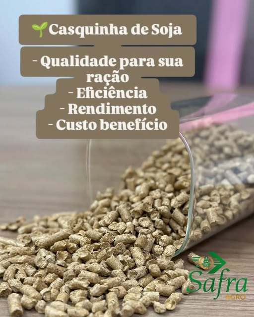

ALTA DIGESTIBILIDADE RUMINALCasquinha de Soja Peletizada
Subproduto nobre do processamento da soja, a casquinha é a fonte predileta de fibra de rápida fermentação no rúmen. Substitui com vantagem parte do volumoso ou grão moído, reduzindo o risco de acidose e diminuindo o custo global do confinamento.
| PARÂMETRO | NÍVEL DE GARANTIA | VANTAGEM ZOOTÉCNICA |
|---|---|---|
| FDN (Fibra em Detergente Neutro) | 65% a 70% | Estabilidade da fermentação ruminal |
| Proteína Bruta (PB) | 12% a 14% | Aporte proteico moderado |
| Nutrientes Digestíveis (NDT) | 75% a 80% | Densidade energética equivalente à polpa |